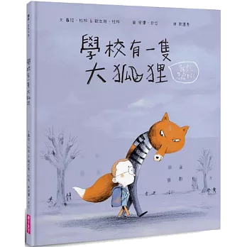
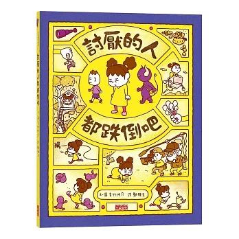
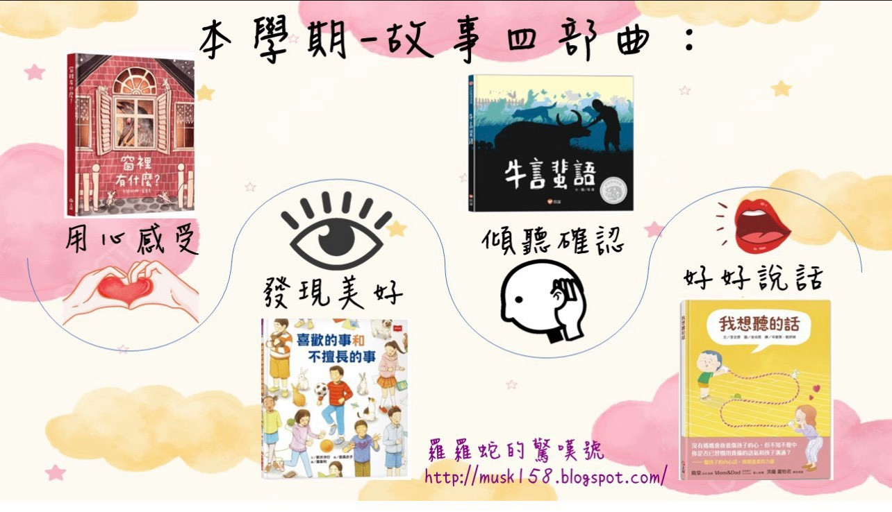
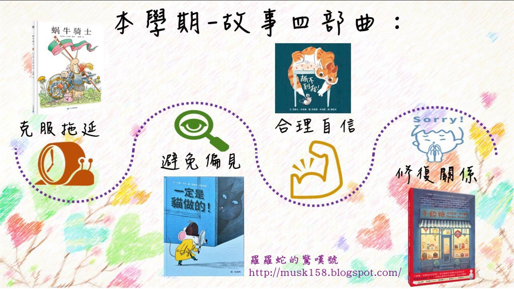

1. Runaway
一場誤會後，Chillie 覺得很傷心，決定自己離開。
- 看什麼
- Chillie 的表情和動作怎麼變了？
- 暫停問
- 如果你是 Chillie，你會想讓對方知道什麼？
親子陪看工具
用角色的臉、手、身體動作與情境，陪孩子練習看見情緒。每次只要挑一部，停下來聊一個小地方就好。
提醒：孩子正處於強烈情緒時，先安定與陪伴，等平靜一些再用影片聊天。
一場誤會後，Chillie 覺得很傷心，決定自己離開。

一個爸爸想帶兒子走上「對的路」，卻慢慢看見兩人的日子變得灰灰的。

一個本來懶得理願望的許願精靈，遇見一個和喜歡有關的願望。
推薦書單
可依孩子當下最常遇到的情境挑 1 本一起讀。讀完先停在一個角色的感覺或做法，不需要一次把書裡的道理講完。


書單來源：徐老師提供。
以下保留羅羅蛇老師整理的兩張故事四部曲推薦圖，方便一起對照書單。


書單來源：羅羅蛇老師推薦。